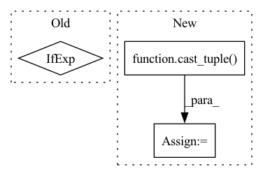

Pattern ID :29627
Before Change
resnet_block(dim_out + dim_in, dim_out, time_emb_dim = time_dim),
resnet_block(dim_out + dim_in, dim_out, time_emb_dim = time_dim),
LinearAttention(dim_out),
Upsample(dim_out, dim_in) if not is_last else nn.Conv2d(dim_out, dim_in, 3, padding = 1)
]))
default_out_dim = input_channelsAfter Change
// downsample factors
downsample_factor = cast_tuple( downsample_factor, len(dim_mults))
assert len(downsample_factor) == len(dim_mults)
// layers
In pattern: SUPERPATTERN
Frequency: 4
Non-data size: 3
Instances Fragment ID: 87852700
Project Name: lucidrains/denoising-diffusion-pytorch
Commit Name: 54557120880bb9adbea9f93a29a2c432b67991c1
Time: 2023-02-01
Author: lucidrains@gmail.com
File Name: denoising_diffusion_pytorch/simple_diffusion.py
M Class Name: UViT
N Class Name: UViT
M Method Name: __init__(17)
N Method Name: __init__(17)
M Parent Class: nn.Module
N Parent Class: nn.Module
M File Name: denoising_diffusion_pytorch/simple_diffusion.py
N File Name: denoising_diffusion_pytorch/simple_diffusion.py
M Start Line: 295
M End Line: 383
N Start Line: 309
N End Line: 409
Before Change
for _ in range(depth):
attn = get_attn()
parallel_net = get_attn() if twin_attention else get_ff()
f = residual_fn_wrapper(attn)
g = residual_fn_wrapper(parallel_net)After Change
for ind in range(depth):
layer_num = ind + 1
use_pkm = layer_num in cast_tuple( pkm_layers)
parallel_net = None
attn = get_attn()
Fragment ID: 87852698
Project Name: lucidrains/reformer-pytorch
Commit Name: fbae34221f4e2c2d777551a5e92b8bba5ae2385c
Time: 2020-06-06
Author: lucidrains@gmail.com
File Name: reformer_pytorch/reformer_pytorch.py
M Class Name: Reformer
N Class Name: Reformer
M Method Name: __init__(32)
N Method Name: __init__(30)
M Parent Class: nn.Module
N Parent Class: nn.Module
M File Name: reformer_pytorch/reformer_pytorch.py
N File Name: reformer_pytorch/reformer_pytorch.py
M Start Line: 757
M End Line: 772
N Start Line: 751
N End Line: 789
Before Change
self.to_logits = nn.Sequential(
nn.LayerNorm(dim),
nn.Linear(dim, num_tokens)
) if exists(num_tokens) else nn.Identity()
def forward(self, x):
x = self.to_embed(x)After Change
self.to_embed = nn.Embedding(num_tokens, dim)
window = cast_tuple( window, depth)
layers = nn.ModuleList([])
for ind, w in zip(range(depth), window):
layer_blocks = nn.ModuleList([ Fragment ID: 87852682
Project Name: lucidrains/g-mlp-gpt
Commit Name: 7642e36ff19c6b299a77e5c1ace038e9e6726202
Time: 2021-05-20
Author: lucidrains@gmail.com
File Name: g_mlp_gpt/g_mlp_gpt.py
M Class Name: gMLPGPT
N Class Name: gMLPGPT
M Method Name: __init__(1)
N Method Name: __init__(1)
M Parent Class: nn.Module
N Parent Class: nn.Module
M File Name: g_mlp_gpt/g_mlp_gpt.py
N File Name: g_mlp_gpt/g_mlp_gpt.py
M Start Line: 188
M End Line: 195
N Start Line: 194
N End Line: 215
Before Change
is_last = ind == (len(in_out) - 1)
layer_use_linear_cross_attn = not layer_cross_attn and use_linear_cross_attn
layer_cond_dim = cond_dim if layer_cross_attn or layer_use_linear_cross_attn else None
transformer_block_klass = TransformerBlock if layer_attn else (LinearAttentionTransformerBlock if use_linear_attn else Identity)
skip_connect_dim = skip_connect_dims.pop()
After Change
layer_attns_depth = cast_tuple(layer_attns_depth, num_layers)
layer_cross_attns = cast_tuple(layer_cross_attns, num_layers)
use_linear_attn = cast_tuple( use_linear_attn, num_layers)
use_linear_cross_attn = cast_tuple(use_linear_cross_attn, num_layers)
assert all([layers == num_layers for layers in list(map(len, (resnet_groups, layer_attns, layer_cross_attns)))])
// downsample klass
downsample_klass = Downsample
if cross_embed_downsample:
downsample_klass = partial(CrossEmbedLayer, kernel_sizes = cross_embed_downsample_kernel_sizes)
// initial resnet block (for memory efficient unet)
self.init_resnet_block = resnet_klass(init_dim, init_dim, time_cond_dim = time_cond_dim, groups = resnet_groups[0], use_gca = use_global_context_attn) if memory_efficient else None
// scale for resnet skip connections
self.skip_connect_scale = 1. if not scale_skip_connection else (2 ** -0.5)
// layers
self.downs = nn.ModuleList([])
self.ups = nn.ModuleList([])
num_resolutions = len(in_out)
layer_params = [num_resnet_blocks, resnet_groups, layer_attns, layer_attns_depth, layer_cross_attns, use_linear_attn, use_linear_cross_attn]
reversed_layer_params = list(map(reversed, layer_params))
// downsampling layers Fragment ID: 87852692
Project Name: lucidrains/imagen-pytorch
Commit Name: d4c45ab1c8380de71e5dd1044dc4100ef9ac76ce
Time: 2022-08-30
Author: lucidrains@gmail.com
File Name: imagen_pytorch/imagen_pytorch.py
M Class Name: Unet
N Class Name: Unet
M Method Name: __init__(1)
N Method Name: __init__(1)
M Parent Class: nn.Module
N Parent Class: nn.Module
M File Name: imagen_pytorch/imagen_pytorch.py
N File Name: imagen_pytorch/imagen_pytorch.py
M Start Line: 1250
M End Line: 1343
N Start Line: 1246
N End Line: 1358